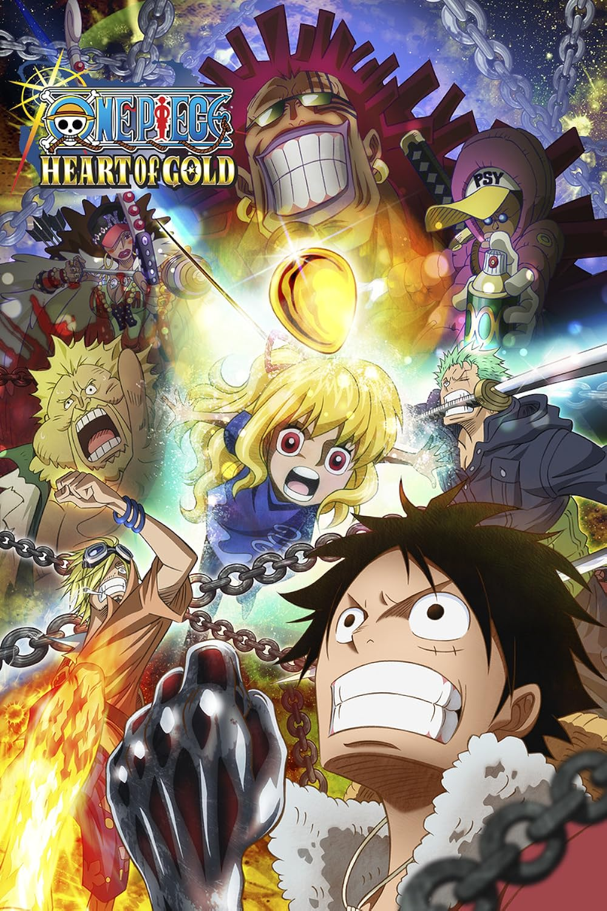

One Piece
Tonton streaming One Piece Subtitle Indonesia di AnoBoy. kamu juga bisa download gratis One Piece Sub Indo, jangan lupa ya untuk nonton streaming online berbagai kualitas 720P 360P 240P 480P sesuai koneksi kamu untuk menghemat kuota internet, One Piece di AnoBoy MP4 MKV hardsub softsub subtitle bahasa Indonesia sudah terdapat di dalam video.

One Piece Film: Red
film One Piece ke-15, yang dirilis pada 6 Agustus 2022,-

One Piece: The Movie
film One Piece ke-1, yang dirilis pada tahun 2000,-
One Piece: Stampad
film One Piece ke-14, yang dirilis pada tahun 2019-

One Piece Film: Z
film One Piece ke-13, yang dirilis pada tahun 2012,-